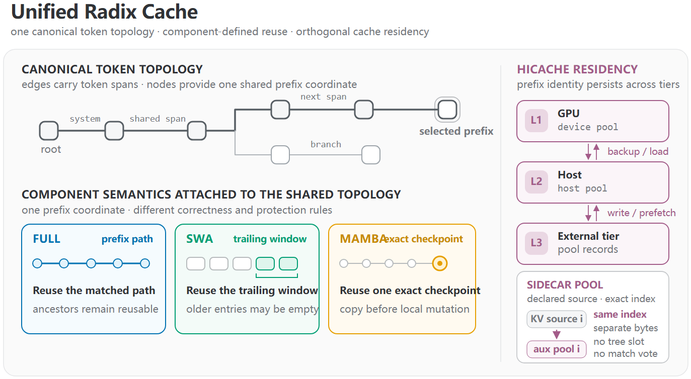
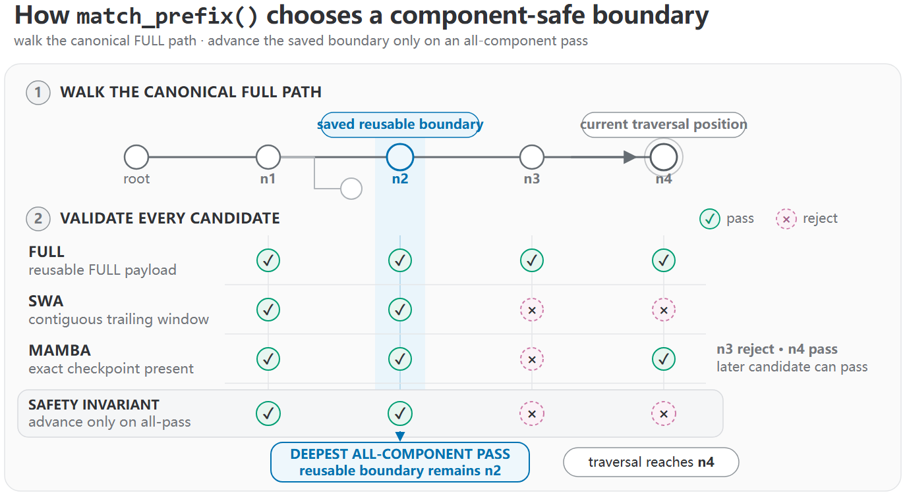
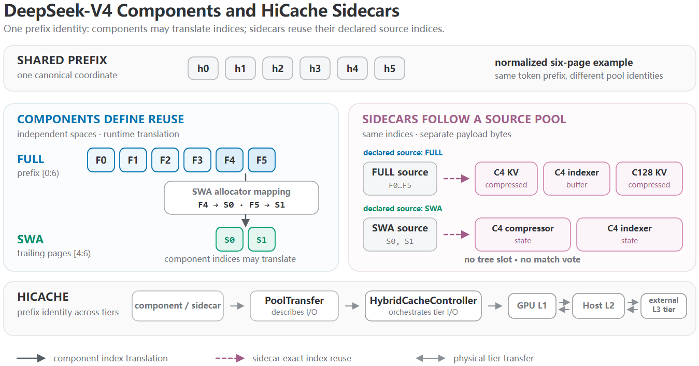
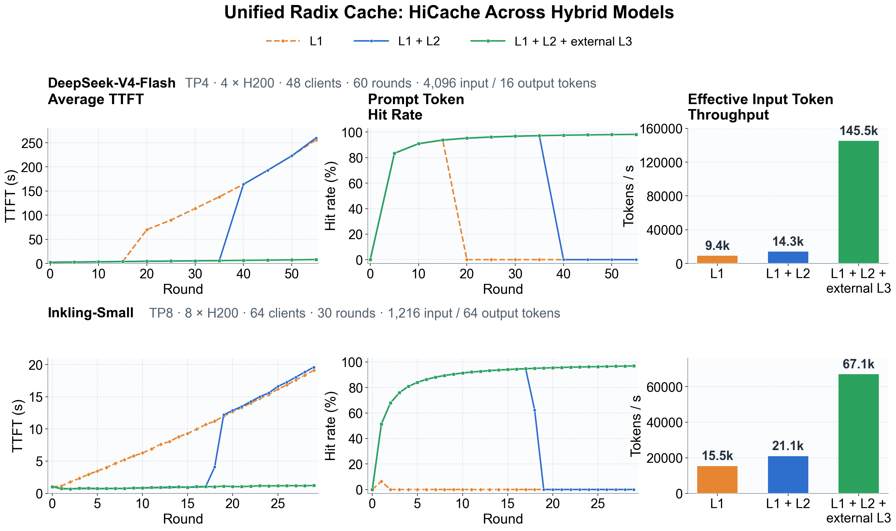
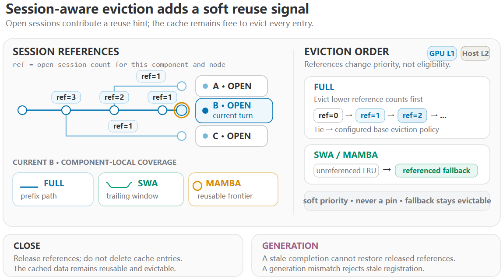
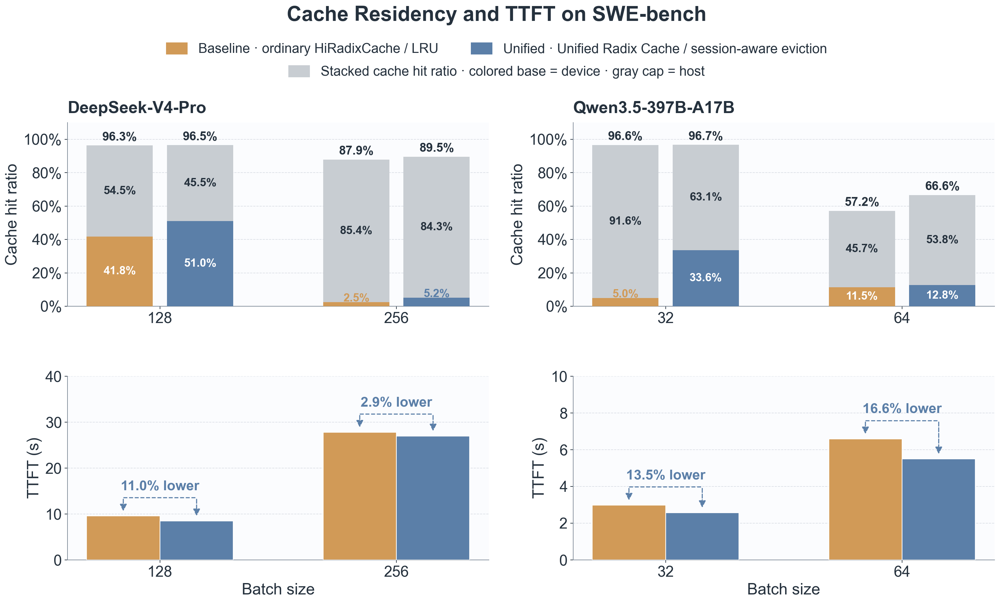
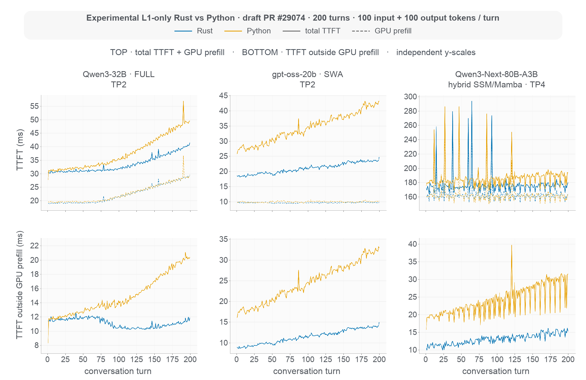

前缀缓存（prefix caching）在请求共享同一token前缀时复用已算好的KV。但混合模型打破了单一复用规则：一条请求可能同时包含全注意力KV、滑动窗口注意力KV和循环状态（recurrent state），每种都有不同的可复用边界：全注意力KV可覆盖整条匹配前缀，滑动窗口KV只覆盖尾部一截窗口，循环状态只在某个精确的前缀检查点上有效。
共享同一token前缀，却不一定共享同一个『可复用边界』。强行给它们划一条统一边界，要么丢掉有效的复用、要么允许了非法的复用。SGLang的Unified Radix Cache用一个共享token拓扑 + 组件化语义来解决：一棵radix树提供规范的prefix坐标，FULL/SWA/MAMBA三种组件各执其法。
前缀缓存会在请求共享相同token前缀时复用KV。在全注意力下，一旦共享前缀的KV算好，随着更多token追加它依然有效，后续带相同前缀的请求可以直接复用而不用在prefill里重算。SGLang用一张由token序列键控的radix树来跟踪这个映射：prefill前，树找出最长可复用前缀并把它的KV位置交给调度器。
混合模型打破了这条单一规则。一条请求可能组合全注意力KV、滑动窗口注意力KV与循环状态，每种都有不同的复用语义：全注意力KV覆盖整条匹配前缀；滑动窗口KV只覆盖尾部窗口；循环状态只在精确的前缀检查点有效。它们共享同一token前缀，却不共享同一可复用边界。
为每种组合编码成专门的缓存类会形成一个组合爆炸的类矩阵，尤其再叠加上HiCache这类正交能力。Unified Radix Cache（SGLang PR #21206）从根上拆解：把『共享前缀身份』和『组件特定复用有效性』分开。一个token键控radix拓扑为每个前缀提供规范坐标，全注意力KV、滑动窗口KV、Mamba检查点作为组件挂载其上，不再需要为每种组合再造一棵缓存树。

Unified Radix Cache把共享前缀映射到一棵radix拓扑，把每种复用规则映射成一个TreeComponent。UnifiedTreeCore运行公共的匹配、分裂、插入、加锁与驱逐机制；UnifiedRadixCache协调池操作；每个组件只定义变化的那部分语义。
FULL组件始终存在。SGLang为混合滑动窗口注意力加SWA组件、为混合循环层加MAMBA组件。例如DeepSeek-V4组合FULL+SWA，Kimi-K3在其KDA循环状态上组合FULL+MAMBA，Inkling则在同一棵树上组合全部三个组件。新模型家族可以直接复用既有组件组合；只有当引入现有集合表达不了的复用规则时，才需要新增一个TreeComponent，而无需再实现一棵新树。
三者的复用语义：FULL提供路径复用，保住匹配前缀里每个token的KV并保护对应祖先路径；SWA提供窗口复用，要求一段连续尾部窗口，更老的SWA槽可以是tombstone、其radix节点仍留在共享拓扑里；MAMBA提供检查点复用，需在可复用边界放一个循环检查点，并在变更前把共享状态拷入私有请求槽。它们对同一候选边界施加不同的规则。
前缀匹配时，UnifiedTreeCore沿规范FULL路径走，把每个访问节点当作候选边界。仅FULL匹配不够：每个激活组件都创建一个验证器（validator），只有当所有验证器都接受该候选时，可复用边界才推进；一次拒绝不阻断遍历，因为组件可能接受更靠后的节点。
在Figure 2里，n1与n2通过所有验证器，而n3、n4至少有一个组件检查失败；行走到达n4，但保留n2作为最深的安全结果。遍历结束后，core构建MatchResult，组件finalizer再为复用准备选中的值：包括共享MAMBA检查点私有化到单条请求时需要的拷贝。

同一组件契约覆盖树生命周期其余部分：匹配（create_match_validator判断候选是否可复用、finalize_match_result准备选中结果）、分裂（redistribute_on_node_split决定划分时组件数据如何移动）、插入（update_component_on_insert_overlap / commit_insert_component_data决定组件拥有哪些池索引）、加锁（acquire/release_component_lock保护一条路径、一段窗口或一个检查点）、驱逐（evict_* 选择设备候选、evict_component移除组件数据、drive_host_eviction回收主机资源）。
组件决定什么可复用，HiCache决定可复用载荷放哪里。Unified Radix Cache把同一组件身份贯穿GPU L1、Host L2与外部L3，跨tier搬数据不改变其前缀身份或复用规则；组件描述所需的转移，HybridCacheController执行物理I/O。
并非每个物理池都需要自己的组件。锚点（anchor）决定复用语义或提供其他池跟随的页索引；sidecar存储独立载荷但复用其声明源池的索引，随源池移动、不参与可复用边界投票、也不在radix拓扑里占额外槽位。DeepSeek-V4把这一点讲得很清楚：FULL覆盖逻辑前缀、SWA只覆盖尾部窗口，两者都是组件且用独立设备索引空间；压缩KV池、索引缓冲、压缩状态等不定义新复用边界，作为sidecar注册（三个池跟随FULL、两个跟随SWA）。

多轮负载每轮都会增长一段可复用对话前缀。比较三种缓存配置（仅GPU L1 / L1+Host L2 / L1+L2+500GiB Mooncake Store外部L3）在DeepSeek-V4-Flash（FULL+SWA、4×H200 TP4、60轮）与Inkling-Small（FULL+SWA+MAMBA、8×H200 TP8、30轮）上的表现。
结果：L1首先丢可复用前缀，L2推迟容量极限，L3预热后保持高位并收在高过96%。DeepSeek-V4-Flash用L3把命中率维持近98%、TTFT均值低于9秒、有效输入吞吐145.5K tokens/s（对比L1 9.4K、L1+L2 14.3K）；Inkling-Small收在96.8% 命中率、1.23秒TTFT、67.1K有效输入吞吐（对比15.5K / 21.1K）。L3的增益主要来自在小tier容量耗尽后仍保住可复用前缀。

普通的LRU只记录哪些缓存条目最近被访问，却不知道哪些前缀属于活跃会话、很可能在下回合被复用：于是内存压力下可能把活跃会话的GPU KV驱逐掉，却留下无关条目。Session-aware驱逐（PR #29173）直接在UnifiedRadixCache里实现，给驱逐一个LRU没有的复用信号。
应用给每个请求附加稳定session_id。请求成功后，Unified Radix Cache为该会话注册可复用区域：FULL跟踪前缀路径、SWA跟踪尾部窗口、MAMBA跟踪可复用边界。所有会话仍共享一棵radix拓扑，每回合仍提供完整prompt。这些引用改变驱逐顺序而非钉住内存：FULL按是否被引用、引用计数与基线驱逐优先级排序候选；SWA/MAMBA先扫自己可复用区域里未引用的条目、空间不足再回落到引用条目。当前策略覆盖GPU L1与Host L2，不含外部L3。

调用 /close_session时，系统移除该会话的引用但不立即删它的缓存条目；会话代际与有界关闭会话tombstone防止在关闭或重开后晚到的请求误恢复已释放的引用。
用DeepSeek-V4-Pro与Qwen3.5-397B-A17B在SWE-bench agent轨迹上评估（TP8 + HiCache）。对比的基线是普通HiRadixCache + LRU，测试档启用Unified Radix Cache与 --enable-session-radix-cache；由于同时改了缓存实现与驱逐策略，差异不应视为session awareness的隔离消融。
命中率大幅提升：batch 128时DeepSeek-V4-Pro设备命中率从约42% 升到51%；batch 32时Qwen从约5% 升到34%；batch 64时Qwen的设备+主机命中率从约58% 升到67%。TTFT也更低：相对基线，session-aware配置让DeepSeek-V4-Pro在batch 128/256降11.0%/2.9%，Qwen在batch 32/64降13.5%/16.6%。

共享前缀越长，树遍历、锁簿记、LRU更新与驱逐扫描都会给调度器关键路径加活。UnifiedRadixCache把树状态机与缓存编排分开，让树核天然成为原生实现的目标。实验性Rust Unified Radix Cache（可选的、L1-only原型）让Rust拥有radix拓扑、每组件锁记账、侵入式LRU列表与驱逐遍历；Python仍是请求到token映射与物理KV分配的单一拥有者，树变更后Rust返回延迟动作让Python应用到池。原型支持FULL、SWA、MAMBA，暂不支持HiCache。
在200回合合成对话（每回合100输入 + 100输出token）上与Python树对比，覆盖全注意力（Qwen3-32B TP2）、SWA（gpt-oss-20b TP2）、混合SSM（Qwen3-Next-80B-A3B TP4）。Rust原型在SWA负载上降幅最大：全200回合TTFT降38%、后176-200回合降42%；全注意力整体降10%、最后25回合降18%；混合SSM整体降5%、最后25回合降7%。

Unified Radix Cache确立了一个共享前缀身份，但还有三处需要围绕它收敛：一是完成可替换的Rust树核（roadmap #20415），把Rust核扩展到SWA、MAMBA与HiCache，池分配与编排仍留在Python；二是让GPU L1直连外部L3 tier，使Host L2变成可选暂存层，把分布式内存暴露成更大的共享缓存（这需要协调准入、预取、转移与驱逐，而不只是又一个存储连接器）；三是跨serving栈协调agentic KV缓存（roadmap #21846），把同一缓存身份扩展到路由器、prefill/decode worker与HiCache，让这些层为会话、子智能体与工具调用协调预取、降级与保留。
结论：混合模型没有一个普适的可复用边界，但也不必为每种注意力与循环状态的组合造一棵独立radix树。Unified Radix Cache保持一棵规范token拓扑，而FULL、SWA、MAMBA组件各执其复用、加锁与驱逐语义。这个共享身份的价值不止于前缀匹配：HiCache让它跨内存tier留存，session引用把它变成保留信号，实验性Rust核证明树的簿记可以演化而无需把池所有权移出Python。
参考：https://www.lmsys.org/blog/2026-08-11-unified-radix-cache